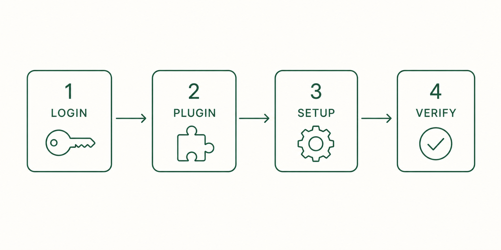
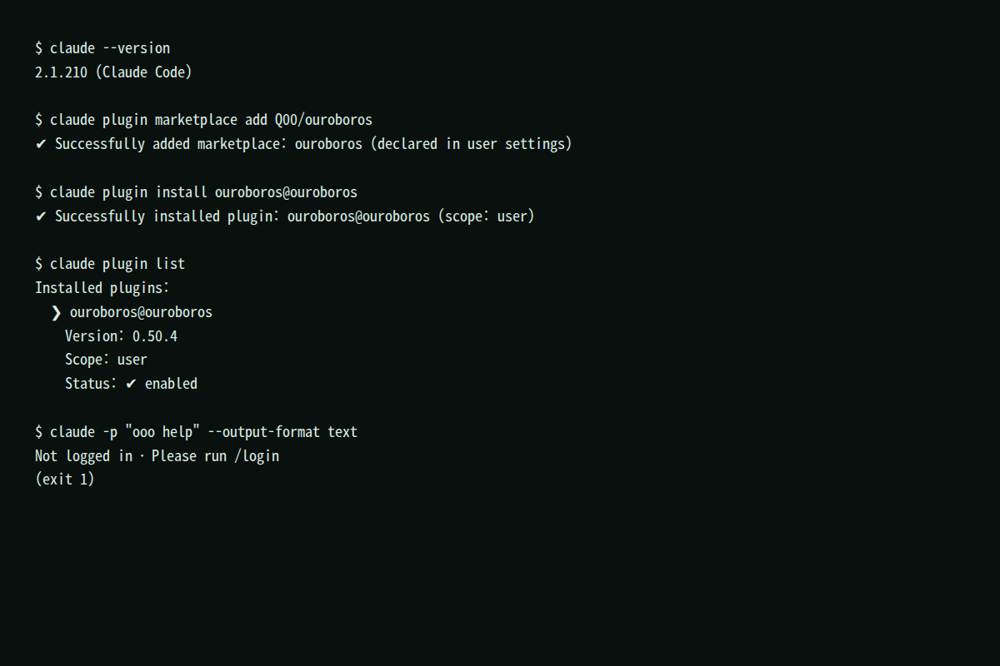

4. 설치
이 가이드는 Claude Code plugin 설치를 기본 경로로 사용합니다. 로그인, plugin 설치, ooo setup, 확인 순서로 진행합니다.

4.1 준비 사항
- plugin을 지원하는 Claude Code가 설치되어 있어야 합니다.
- Python은 필요 없습니다. Claude Code plugin 경로는 Python 설치 없이 동작합니다.
- Windows는 WSL 2 안에서 Linux 절차를 따릅니다.
4.2 Claude Code 로그인
터미널에서 Claude Code 세션을 엽니다.
claudeClaude Code 대화창 안에서 로그인합니다.
/login정상 결과: 브라우저 인증 후 대화창에 로그인 완료가 표시됩니다. 로그인하지 않으면 이후 ooo 명령이 동작하지 않습니다.
4.3 plugin 설치
다음 두 명령은 Claude Code 밖의 일반 터미널에서 실행합니다.
claude plugin marketplace add Q00/ouroboros
claude plugin install ouroboros@ouroboros
정상 결과: claude plugin list에 ouroboros@ouroboros가 enabled로 표시됩니다.
4.4 ooo setup — Core와 MCP 연결
작업할 프로젝트 폴더에서 Claude Code 세션을 열고, 대화창에 입력합니다.
ooo setupooo setup은 Ouroboros Core의 MCP 서버를 전역으로 등록합니다. 등록은 한 번만 하면 됩니다. 선택에 따라 현재 프로젝트의 CLAUDE.md에 명령 요약을 추가합니다.
정상 결과: MCP 서버 등록 완료 안내가 표시됩니다. 공식 문서 기준으로 등록 정보는 ~/.claude/mcp.json에 기록됩니다. 등록 후 Claude Code를 완전히 닫고 다시 엽니다.
4.5 설치 확인
Claude Code 대화창에서 실행합니다.
ooo help정상 결과: interview, seed, run, evaluate 등 명령 목록이 표시됩니다. 표시되지 않으면 11장을 확인합니다.
4.6 업데이트
Claude Code 대화창에서 실행합니다.
ooo update정상 결과: 현재 버전과 최신 버전을 비교하고, 설치 방식에 맞게 갱신합니다. 업데이트 후 Claude Code 세션을 다시 엽니다.
4.7 설치 완료 기준
claude plugin list에ouroboros@ouroboros가 enabled로 표시된다.ooo help가 명령 목록을 표시한다.- Claude Code의
/mcp에서 ouroboros 서버가 연결 상태로 표시된다.
Claude Code 없이 터미널에서 설치하기
독립 CLI는 Python 3.12 이상이 필요하며 일반 터미널에서 설치합니다.
pip install ouroboros-ai
ouroboros setupCodex CLI 등 다른 runtime은 ouroboros setup --runtime codex처럼 지정합니다. 이 가이드 본문은 Claude Code의 ooo 명령 기준으로 설명합니다.